<title>Posts Google Construisez</title>
<meta name="claude:viewport-fit-sides" content="cover">
<link rel="preconnect" href="https://fonts.googleapis.com">
<link rel="stylesheet" href="https://fonts.googleapis.com/css2?family=Bodoni+Moda:ital,opsz,wght@0,6..96,500;1,6..96,500&family=IBM+Plex+Mono:wght@500&family=Public+Sans:wght@400;600;700&display=swap">
<style>
/* Mise en page : une colonne de fiches datées, image à gauche et texte à copier à droite ; une seule ambiance sombre, celle de construisez.fr */
:root {
  --bg: #0b0c0f; --card: #13151b; --line: #242731; --fg: #fbfbfa; --dim: #9ca0ab;
  --acc: #3e6b5c; --acc-l: #7fb3a0;
  --display: 'Bodoni Moda', Didot, 'Times New Roman', serif;
  --body: 'Public Sans', system-ui, sans-serif;
  --mono: 'IBM Plex Mono', ui-monospace, monospace;
  color-scheme: dark;
}
body { background: var(--bg); color: var(--fg); font-family: var(--body); font-size: 16px; line-height: 1.5; }
.wrap { max-width: 1080px; margin: 0 auto; padding-block: 40px 80px; padding-left: max(16px, env(safe-area-inset-left, 0px)); padding-right: max(16px, env(safe-area-inset-right, 0px)); display: flex; flex-direction: column; gap: 28px; }
.eyebrow, .lab, .when, .done, figcaption, .city { font-family: var(--mono); letter-spacing: .14em; text-transform: uppercase; font-size: 12px; color: var(--dim); }
.eyebrow { color: var(--acc-l); }
h1 { font-family: var(--display); font-weight: 500; font-size: clamp(36px, 6vw, 60px); line-height: 1.05; text-wrap: balance; margin: 8px 0 0; }
h1 em { color: var(--acc-l); }
.intro { max-width: 65ch; color: #d5d9dd; margin: 0; }
.steps { display: grid; grid-template-columns: repeat(auto-fit, minmax(220px, 1fr)); gap: 12px; margin: 0; padding: 0; list-style: none; counter-reset: s; }
.steps li { counter-increment: s; background: var(--card); border: 1px solid var(--line); border-radius: 8px; padding: 16px 18px; color: #d5d9dd; min-width: 0; }
.steps li::before { content: counter(s); display: block; font-family: var(--mono); color: var(--acc-l); margin-bottom: 6px; }
.steps b { color: var(--fg); }
.progress { font-family: var(--mono); font-size: 13px; color: var(--acc-l); }
.post { border-top: 1px solid var(--line); padding-top: 24px; display: flex; flex-direction: column; gap: 10px; }
.post.is-done { opacity: .45; }
.post-head { display: flex; justify-content: space-between; align-items: center; gap: 12px; flex-wrap: wrap; }
.when { display: flex; gap: 12px; align-items: baseline; flex-wrap: wrap; color: var(--fg); }
.when .n { color: var(--acc-l); }
.when .time { color: var(--dim); }
.done { display: flex; align-items: center; gap: 8px; cursor: pointer; color: var(--fg); }
.done input { width: 18px; height: 18px; accent-color: var(--acc); }
h2 { font-family: var(--display); font-weight: 500; font-size: clamp(24px, 3.4vw, 32px); line-height: 1.15; margin: 0; text-wrap: balance; }
.city { margin: 0; text-transform: none; letter-spacing: .04em; }
.body { display: grid; grid-template-columns: minmax(0, 5fr) minmax(0, 6fr); gap: 24px; align-items: start; margin-top: 6px; }
figure { margin: 0; display: flex; flex-direction: column; gap: 8px; }
figure img { width: 100%; height: auto; border-radius: 8px; border: 1px solid var(--line); }
figcaption { text-transform: none; letter-spacing: .02em; font-size: 12px; }
.txt { display: flex; flex-direction: column; gap: 10px; min-width: 0; }
.label-row { display: flex; justify-content: space-between; align-items: center; gap: 12px; flex-wrap: wrap; }
.text { margin: 0; white-space: pre-wrap; font-family: var(--body); font-size: 15px; line-height: 1.55; background: var(--card); border: 1px solid var(--line); border-radius: 8px; padding: 16px 18px; color: #e4e7ea; }
.url { display: block; font-family: var(--mono); font-size: 12px; background: var(--card); border: 1px solid var(--line); border-radius: 8px; padding: 12px 14px; color: var(--dim); overflow-wrap: anywhere; }
.copy { font-family: var(--body); font-weight: 700; font-size: 14px; color: #fff; background: var(--acc); border: 0; border-radius: 6px; padding: 9px 14px; cursor: pointer; }
.copy:hover { filter: brightness(1.12); }
.copy:focus-visible, .done input:focus-visible { outline: 2px solid var(--acc-l); outline-offset: 2px; }
.copy.ok { background: var(--card); color: var(--acc-l); box-shadow: inset 0 0 0 1px var(--acc); }
@media (max-width: 720px) { .body { grid-template-columns: minmax(0, 1fr); } }
@media (prefers-reduced-motion: no-preference) { .post { transition: opacity .2s; } }
</style>

<main class="wrap">
  <header>
    <div class="eyebrow">Construisez · fiche Google</div>
    <h1>Vos posts Google, <em>prêts à publier</em></h1>
  </header>
  <p class="intro">Un post par date, le même jour que sur Instagram et Facebook. Comptez une minute par post. Cochez « Publié » une fois en ligne : la case reste cochée sur cet appareil.</p>
  <ol class="steps">
    <li>Sur votre téléphone, ouvrez <b>Google Maps</b> ou cherchez <b>« Construisez »</b> sur Google, puis touchez <b>Ajouter une actualité</b>.</li>
    <li>Ajoutez l'<b>image</b> : enregistrez-la depuis cette page (appui long), puis choisissez-la dans vos photos.</li>
    <li>Collez le <b>texte</b> avec « Copier le texte ».</li>
    <li>Ajoutez un bouton <b>En savoir plus</b> et collez le lien, puis <b>Publiez</b>.</li>
  </ol>
  <p class="progress" id="progress"></p>
  
<article class="post" id="p2026-11-09" data-id="2026-11-09">
  <header class="post-head">
    <div class="when"><span class="n">01</span><span class="day">lundi 9 novembre</span><span class="time">dès 09:00</span></div>
    <label class="done"><input type="checkbox" id="done-2026-11-09"> Publié</label>
  </header>
  <h2>Saisonnier : déposer en hiver pour construire au printemps</h2>
  <p class="city">📍 Saint-Maur-des-Fossés (94)</p>
  <div class="body">
    <figure>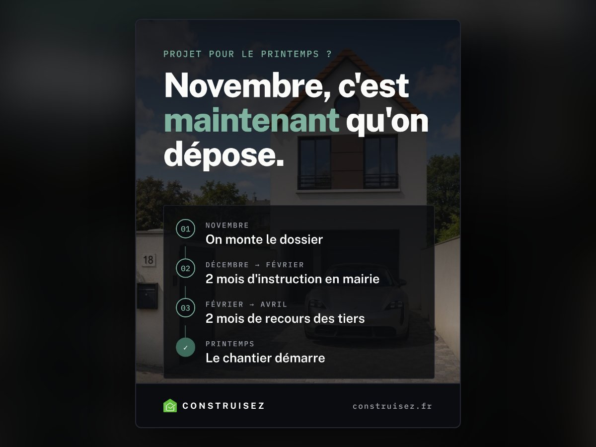<figcaption>Appui long (téléphone) ou clic droit : « Enregistrer l'image »</figcaption></figure>
    <div class="txt">
      <div class="label-row"><span class="lab">Texte de l'actualité</span><button type="button" class="copy" data-target="t-2026-11-09">Copier le texte</button></div>
      <pre id="t-2026-11-09" class="text">Des travaux au printemps ? C&#x27;est maintenant qu&#x27;il faut déposer votre permis de construire.

Comptez 2 à 3 semaines pour monter un dossier complet, 2 mois d&#x27;instruction en mairie pour une maison individuelle (3 mois près d&#x27;un monument historique), puis 2 mois de délai de recours des voisins après l&#x27;affichage sur le terrain. Un dossier déposé en novembre, c&#x27;est un chantier qui peut démarrer au printemps.

Construisez monte et dépose votre permis de construire ou votre déclaration préalable partout en Île-de-France. Devis sous 24 h.</pre>
      <div class="label-row"><span class="lab">Bouton : En savoir plus</span><button type="button" class="copy" data-target="u-2026-11-09">Copier le lien</button></div>
      <code id="u-2026-11-09" class="url">https://www.construisez.fr/?utm_source=google&utm_medium=gbp&utm_campaign=posts</code>
    </div>
  </div>
</article>
<article class="post" id="p2026-11-10" data-id="2026-11-10">
  <header class="post-head">
    <div class="when"><span class="n">02</span><span class="day">mardi 10 novembre</span><span class="time">dès 19:45</span></div>
    <label class="done"><input type="checkbox" id="done-2026-11-10"> Publié</label>
  </header>
  <h2>Délais d&#x27;instruction d&#x27;une autorisation</h2>
  <p class="city">📍 Saint-Maur-des-Fossés (94)</p>
  <div class="body">
    <figure><figcaption>Appui long (téléphone) ou clic droit : « Enregistrer l'image »</figcaption></figure>
    <div class="txt">
      <div class="label-row"><span class="lab">Texte de l'actualité</span><button type="button" class="copy" data-target="t-2026-11-10">Copier le texte</button></div>
      <pre id="t-2026-11-10" class="text">Combien de temps pour obtenir une autorisation d&#x27;urbanisme ? Comptez 1 mois pour une déclaration préalable, 2 mois pour un permis de construire de maison individuelle, 3 mois pour les autres permis, et 1 mois de plus près d&#x27;un monument historique.

Attention : le délai ne court qu&#x27;à partir du dossier complet. La mairie a 1 mois pour réclamer une pièce manquante, et le délai repart à sa réception. Un dossier complet du premier coup, c&#x27;est des semaines gagnées.

Construisez prépare et dépose vos autorisations d&#x27;urbanisme partout en Île-de-France. Devis sous 24 h.</pre>
      <div class="label-row"><span class="lab">Bouton : En savoir plus</span><button type="button" class="copy" data-target="u-2026-11-10">Copier le lien</button></div>
      <code id="u-2026-11-10" class="url">https://www.construisez.fr/?utm_source=google&utm_medium=gbp&utm_campaign=posts</code>
    </div>
  </div>
</article>
<article class="post" id="p2026-11-11" data-id="2026-11-11">
  <header class="post-head">
    <div class="when"><span class="n">03</span><span class="day">mercredi 11 novembre</span><span class="time">dès 19:45</span></div>
    <label class="done"><input type="checkbox" id="done-2026-11-11"> Publié</label>
  </header>
  <h2>permis modificatif à Pontault-Combault (77)</h2>
  <p class="city">📍 Pontault-Combault (77)</p>
  <div class="body">
    <figure>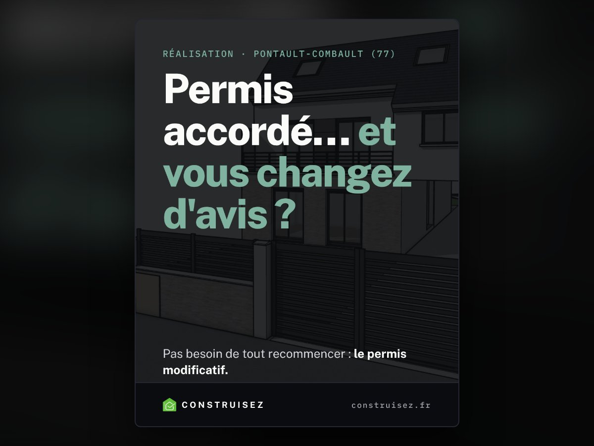<figcaption>Appui long (téléphone) ou clic droit : « Enregistrer l'image »</figcaption></figure>
    <div class="txt">
      <div class="label-row"><span class="lab">Texte de l'actualité</span><button type="button" class="copy" data-target="t-2026-11-11">Copier le texte</button></div>
      <pre id="t-2026-11-11" class="text">Votre permis est accordé mais votre projet a changé ? Pas besoin de tout recommencer : il existe le permis de construire modificatif.

À Pontault-Combault (77), le permis prévoyait 2 maisons. Le modificatif a transformé l&#x27;intérieur en 2 logements, dont 1 dans les combles, et 2 bureaux, avec une clôture repensée. Façades, volume et emprise au sol sont inchangés.

À savoir : le modificatif se dépose tant que le permis est valable et que les travaux ne sont pas achevés, il ne doit pas bouleverser le projet et il ne prolonge pas la validité du permis initial.

Un permis à modifier ? Devis sous 24 h.</pre>
      <div class="label-row"><span class="lab">Bouton : En savoir plus</span><button type="button" class="copy" data-target="u-2026-11-11">Copier le lien</button></div>
      <code id="u-2026-11-11" class="url">https://www.construisez.fr/?utm_source=google&utm_medium=gbp&utm_campaign=posts</code>
    </div>
  </div>
</article>
<article class="post" id="p2026-11-12" data-id="2026-11-12">
  <header class="post-head">
    <div class="when"><span class="n">04</span><span class="day">jeudi 12 novembre</span><span class="time">dès 19:45</span></div>
    <label class="done"><input type="checkbox" id="done-2026-11-12"> Publié</label>
  </header>
  <h2>extension contemporaine sur une maison ancienne</h2>
  <p class="city">📍 Saint-Maur-des-Fossés (94)</p>
  <div class="body">
    <figure>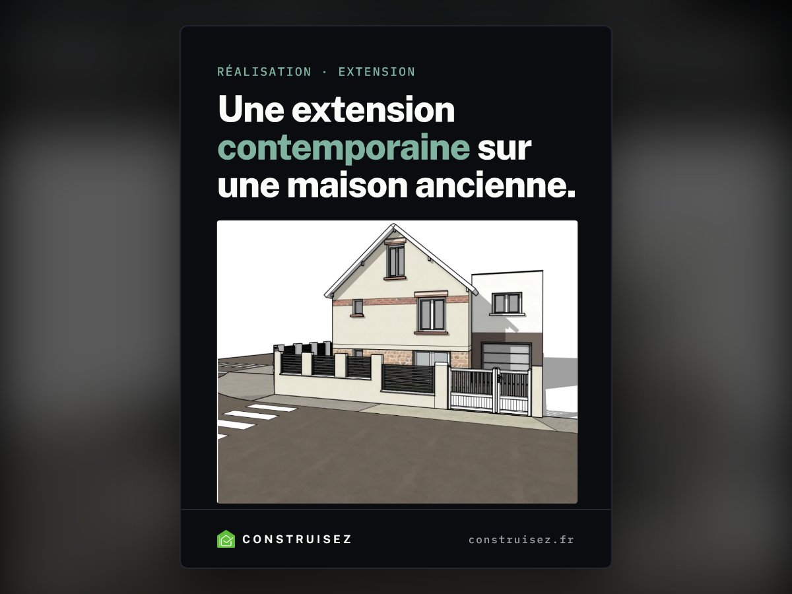<figcaption>Appui long (téléphone) ou clic droit : « Enregistrer l'image »</figcaption></figure>
    <div class="txt">
      <div class="label-row"><span class="lab">Texte de l'actualité</span><button type="button" class="copy" data-target="t-2026-11-12">Copier le texte</button></div>
      <pre id="t-2026-11-12" class="text">Agrandir une maison ancienne sans perdre son charme : c&#x27;est possible.

Pour ce client, nous avons conçu une extension contemporaine, toit plat et enduit clair, avec un garage intégré, ainsi qu&#x27;une clôture et un portail redessinés, le tout dans un seul dossier. Le défi d&#x27;une extension moderne, ce n&#x27;est pas le style, c&#x27;est le PLU : hauteur, recul, emprise, aspect extérieur. L&#x27;insertion du projet dans la vraie rue convainc la mairie.

Un projet d&#x27;extension en Île-de-France ? Construisez vérifie la faisabilité avant de dessiner. Devis sous 24 h.</pre>
      <div class="label-row"><span class="lab">Bouton : En savoir plus</span><button type="button" class="copy" data-target="u-2026-11-12">Copier le lien</button></div>
      <code id="u-2026-11-12" class="url">https://www.construisez.fr/?utm_source=google&utm_medium=gbp&utm_campaign=posts</code>
    </div>
  </div>
</article>
<article class="post" id="p2026-11-13" data-id="2026-11-13">
  <header class="post-head">
    <div class="when"><span class="n">05</span><span class="day">vendredi 13 novembre</span><span class="time">dès 19:45</span></div>
    <label class="done"><input type="checkbox" id="done-2026-11-13"> Publié</label>
  </header>
  <h2>Piscine : déclaration ou permis</h2>
  <p class="city">📍 Saint-Maur-des-Fossés (94)</p>
  <div class="body">
    <figure>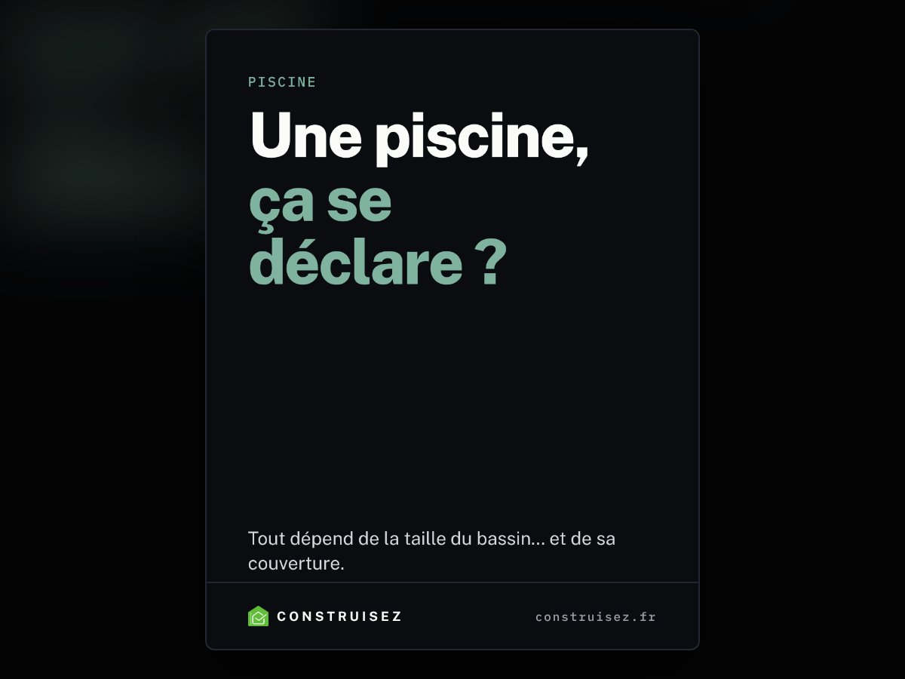<figcaption>Appui long (téléphone) ou clic droit : « Enregistrer l'image »</figcaption></figure>
    <div class="txt">
      <div class="label-row"><span class="lab">Texte de l'actualité</span><button type="button" class="copy" data-target="t-2026-11-13">Copier le texte</button></div>
      <pre id="t-2026-11-13" class="text">Une piscine, ça se déclare ? Jusqu&#x27;à 10 m² de bassin : aucune formalité, hors secteur protégé. De 10 à 100 m² : déclaration préalable, si le bassin n&#x27;est pas couvert ou si sa couverture fait moins de 1,80 m. Au-delà de 100 m², ou avec une couverture de plus de 1,80 m : permis de construire.

Au-delà de 10 m², la piscine entre aussi dans le calcul de la taxe d&#x27;aménagement. Pour se baigner l&#x27;été prochain, c&#x27;est en hiver qu&#x27;il faut déposer.

Construisez prépare et dépose vos autorisations d&#x27;urbanisme partout en Île-de-France. Devis sous 24 h.</pre>
      <div class="label-row"><span class="lab">Bouton : En savoir plus</span><button type="button" class="copy" data-target="u-2026-11-13">Copier le lien</button></div>
      <code id="u-2026-11-13" class="url">https://www.construisez.fr/?utm_source=google&utm_medium=gbp&utm_campaign=posts</code>
    </div>
  </div>
</article>
<article class="post" id="p2026-11-14" data-id="2026-11-14">
  <header class="post-head">
    <div class="when"><span class="n">06</span><span class="day">samedi 14 novembre</span><span class="time">dès 19:45</span></div>
    <label class="done"><input type="checkbox" id="done-2026-11-14"> Publié</label>
  </header>
  <h2>Carport, pergola, auvent : l&#x27;emprise au sol</h2>
  <p class="city">📍 Saint-Maur-des-Fossés (94)</p>
  <div class="body">
    <figure>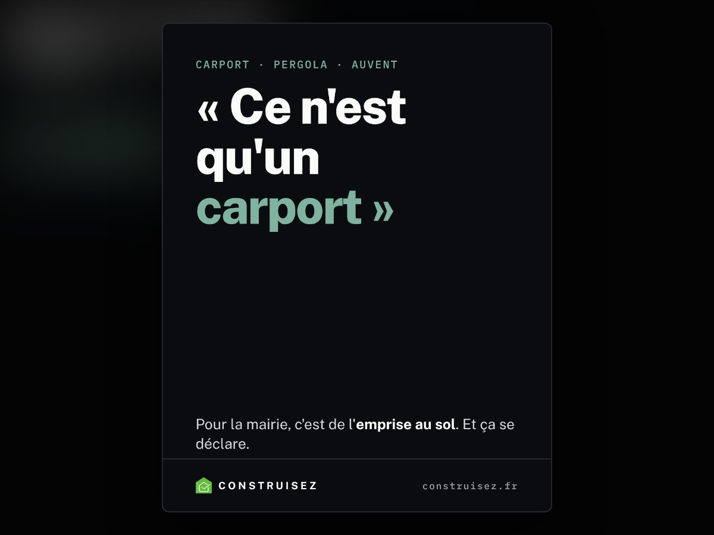<figcaption>Appui long (téléphone) ou clic droit : « Enregistrer l'image »</figcaption></figure>
    <div class="txt">
      <div class="label-row"><span class="lab">Texte de l'actualité</span><button type="button" class="copy" data-target="t-2026-11-14">Copier le texte</button></div>
      <pre id="t-2026-11-14" class="text">Carport, pergola couverte, auvent : ils créent de l&#x27;emprise au sol et se déclarent comme une construction. Moins de 5 m² : aucune formalité, hors secteur protégé. De 5 à 20 m² : déclaration préalable. Plus de 20 m² : permis de construire, sauf s&#x27;il est accolé à la maison en zone urbaine d&#x27;un PLU, où la déclaration va jusqu&#x27;à 40 m².

Le PLU peut aussi imposer un recul, une hauteur maximale ou des matériaux.

Construisez prépare et dépose vos autorisations d&#x27;urbanisme partout en Île-de-France. Devis sous 24 h.</pre>
      <div class="label-row"><span class="lab">Bouton : En savoir plus</span><button type="button" class="copy" data-target="u-2026-11-14">Copier le lien</button></div>
      <code id="u-2026-11-14" class="url">https://www.construisez.fr/?utm_source=google&utm_medium=gbp&utm_campaign=posts</code>
    </div>
  </div>
</article>
<article class="post" id="p2026-11-15" data-id="2026-11-15">
  <header class="post-head">
    <div class="when"><span class="n">07</span><span class="day">dimanche 15 novembre</span><span class="time">dès 19:45</span></div>
    <label class="done"><input type="checkbox" id="done-2026-11-15"> Publié</label>
  </header>
  <h2>élargissement de deux portails et clôture à Argenteuil (95)</h2>
  <p class="city">📍 Argenteuil (95)</p>
  <div class="body">
    <figure>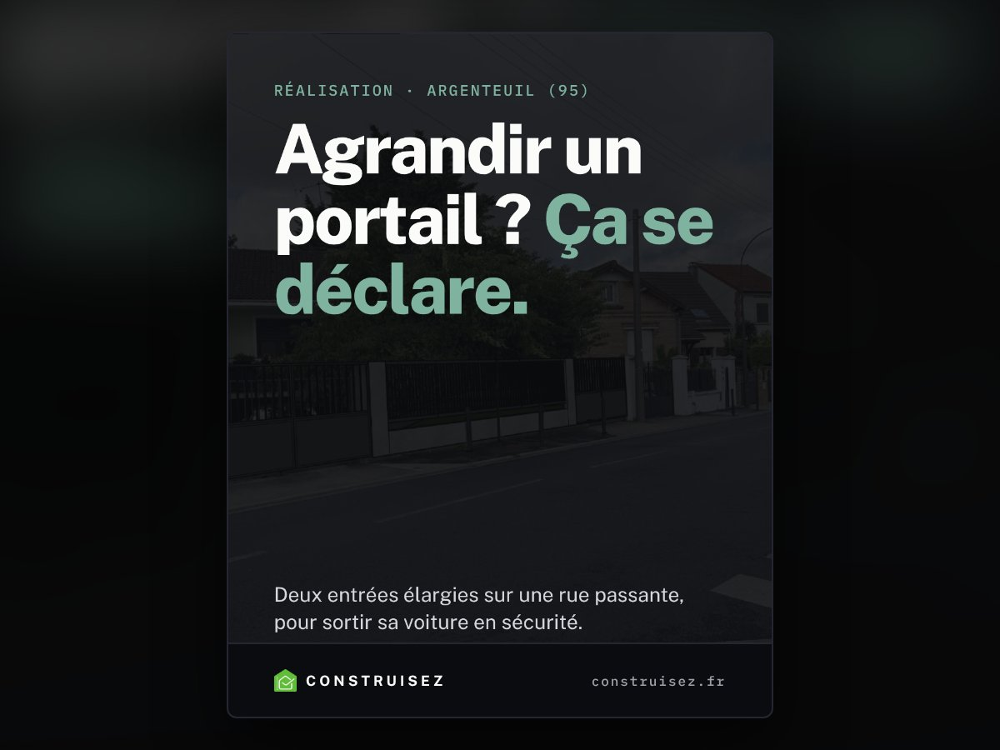<figcaption>Appui long (téléphone) ou clic droit : « Enregistrer l'image »</figcaption></figure>
    <div class="txt">
      <div class="label-row"><span class="lab">Texte de l'actualité</span><button type="button" class="copy" data-target="t-2026-11-15">Copier le texte</button></div>
      <pre id="t-2026-11-15" class="text">Agrandir un portail ? Dans beaucoup de communes, ça se déclare.

À Argenteuil (95), ce client voulait sortir sa voiture en sécurité sur une rue passante. Nous avons déposé une déclaration préalable pour élargir ses deux portails, de 3,08 à 3,50 m et de 2,58 à 3,00 m, remplacer le barreaudage et créer un passage pour la petite faune.

Le PLU fixe les règles des clôtures : hauteur, matériaux, couleur, partie ajourée. Un portail, une clôture ou un muret à modifier ? Construisez s&#x27;occupe du dossier. Devis sous 24 h.</pre>
      <div class="label-row"><span class="lab">Bouton : En savoir plus</span><button type="button" class="copy" data-target="u-2026-11-15">Copier le lien</button></div>
      <code id="u-2026-11-15" class="url">https://www.construisez.fr/?utm_source=google&utm_medium=gbp&utm_campaign=posts</code>
    </div>
  </div>
</article>
<article class="post" id="p2026-11-16" data-id="2026-11-16">
  <header class="post-head">
    <div class="when"><span class="n">08</span><span class="day">lundi 16 novembre</span><span class="time">dès 19:45</span></div>
    <label class="done"><input type="checkbox" id="done-2026-11-16"> Publié</label>
  </header>
  <h2>Fenêtres de toit et combles</h2>
  <p class="city">📍 Saint-Maur-des-Fossés (94)</p>
  <div class="body">
    <figure><figcaption>Appui long (téléphone) ou clic droit : « Enregistrer l'image »</figcaption></figure>
    <div class="txt">
      <div class="label-row"><span class="lab">Texte de l'actualité</span><button type="button" class="copy" data-target="t-2026-11-16">Copier le texte</button></div>
      <pre id="t-2026-11-16" class="text">Aménager ses combles : ce qui se déclare. Les fenêtres de toit modifient la toiture, donc déclaration préalable. Les combles aménagés ajoutent de la surface de plancher. Et au-delà de 150 m², avec un permis de construire, l&#x27;architecte devient obligatoire.

En secteur protégé, l&#x27;Architecte des Bâtiments de France donne aussi son avis sur la taille et la position des fenêtres.

Construisez prépare et dépose vos autorisations d&#x27;urbanisme partout en Île-de-France. Devis sous 24 h.</pre>
      <div class="label-row"><span class="lab">Bouton : En savoir plus</span><button type="button" class="copy" data-target="u-2026-11-16">Copier le lien</button></div>
      <code id="u-2026-11-16" class="url">https://www.construisez.fr/?utm_source=google&utm_medium=gbp&utm_campaign=posts</code>
    </div>
  </div>
</article>
<article class="post" id="p2026-11-17" data-id="2026-11-17">
  <header class="post-head">
    <div class="when"><span class="n">09</span><span class="day">mardi 17 novembre</span><span class="time">dès 19:45</span></div>
    <label class="done"><input type="checkbox" id="done-2026-11-17"> Publié</label>
  </header>
  <h2>Mythe à démolir : les 40 m² sans permis</h2>
  <p class="city">📍 Saint-Maur-des-Fossés (94)</p>
  <div class="body">
    <figure>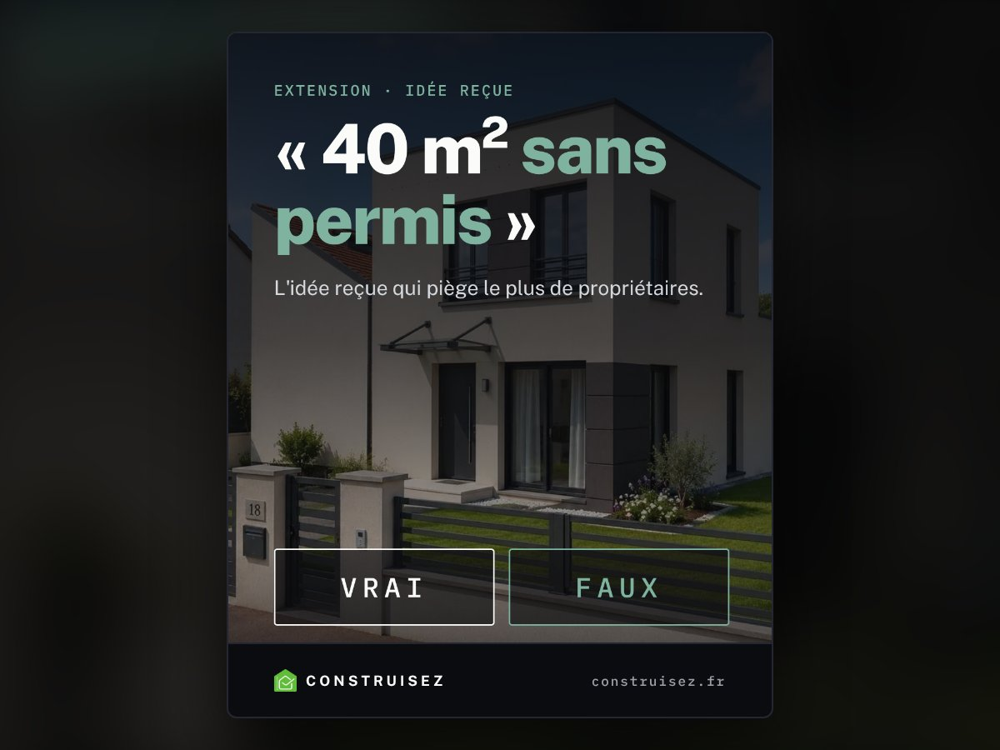<figcaption>Appui long (téléphone) ou clic droit : « Enregistrer l'image »</figcaption></figure>
    <div class="txt">
      <div class="label-row"><span class="lab">Texte de l'actualité</span><button type="button" class="copy" data-target="t-2026-11-17">Copier le texte</button></div>
      <pre id="t-2026-11-17" class="text">« Moins de 40 m², pas besoin de permis » : vrai et faux.

En zone urbaine d&#x27;un PLU, une extension jusqu&#x27;à 40 m² passe en général par une déclaration préalable. Mais si, avec l&#x27;extension, la maison dépasse 150 m² de surface de plancher, il faut un permis de construire et un architecte. Exemple : 120 m² + 35 m² = 155 m². Hors zone urbaine, le seuil tombe à 20 m².

Un doute sur votre projet d&#x27;extension ? Construisez vous dit quelle autorisation il vous faut. Devis sous 24 h.</pre>
      <div class="label-row"><span class="lab">Bouton : En savoir plus</span><button type="button" class="copy" data-target="u-2026-11-17">Copier le lien</button></div>
      <code id="u-2026-11-17" class="url">https://www.construisez.fr/?utm_source=google&utm_medium=gbp&utm_campaign=posts</code>
    </div>
  </div>
</article>
<article class="post" id="p2026-11-18" data-id="2026-11-18">
  <header class="post-head">
    <div class="when"><span class="n">10</span><span class="day">mercredi 18 novembre</span><span class="time">dès 19:45</span></div>
    <label class="done"><input type="checkbox" id="done-2026-11-18"> Publié</label>
  </header>
  <h2>Panneaux solaires en toiture</h2>
  <p class="city">📍 Saint-Maur-des-Fossés (94)</p>
  <div class="body">
    <figure>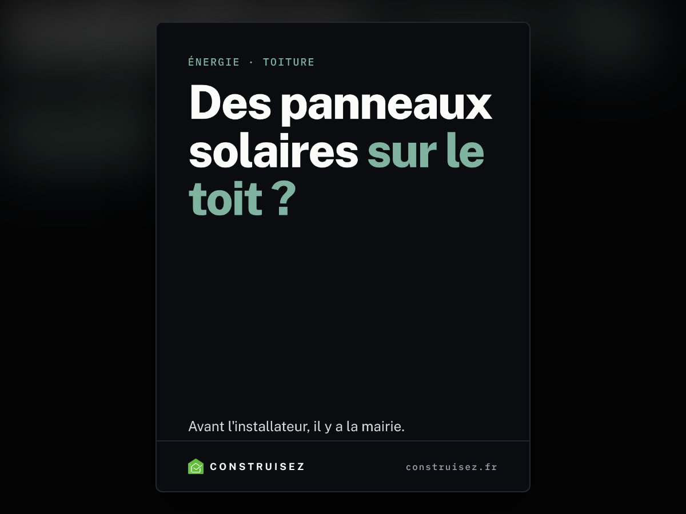<figcaption>Appui long (téléphone) ou clic droit : « Enregistrer l'image »</figcaption></figure>
    <div class="txt">
      <div class="label-row"><span class="lab">Texte de l'actualité</span><button type="button" class="copy" data-target="t-2026-11-18">Copier le texte</button></div>
      <pre id="t-2026-11-18" class="text">Des panneaux solaires sur le toit demandent une déclaration préalable : ils changent l&#x27;aspect de la maison, même posés par un professionnel.

Le PLU peut encadrer leur position, leur intégration et leur couleur. En secteur protégé, l&#x27;Architecte des Bâtiments de France donne son avis. Sans autorisation, la mairie peut exiger une remise en état.

Construisez prépare et dépose vos autorisations d&#x27;urbanisme partout en Île-de-France. Devis sous 24 h.</pre>
      <div class="label-row"><span class="lab">Bouton : En savoir plus</span><button type="button" class="copy" data-target="u-2026-11-18">Copier le lien</button></div>
      <code id="u-2026-11-18" class="url">https://www.construisez.fr/?utm_source=google&utm_medium=gbp&utm_campaign=posts</code>
    </div>
  </div>
</article>
<article class="post" id="p2026-11-19" data-id="2026-11-19">
  <header class="post-head">
    <div class="when"><span class="n">11</span><span class="day">jeudi 19 novembre</span><span class="time">dès 19:45</span></div>
    <label class="done"><input type="checkbox" id="done-2026-11-19"> Publié</label>
  </header>
  <h2>rénovation d’une façade arrière</h2>
  <p class="city">📍 Saint-Maur-des-Fossés (94)</p>
  <div class="body">
    <figure>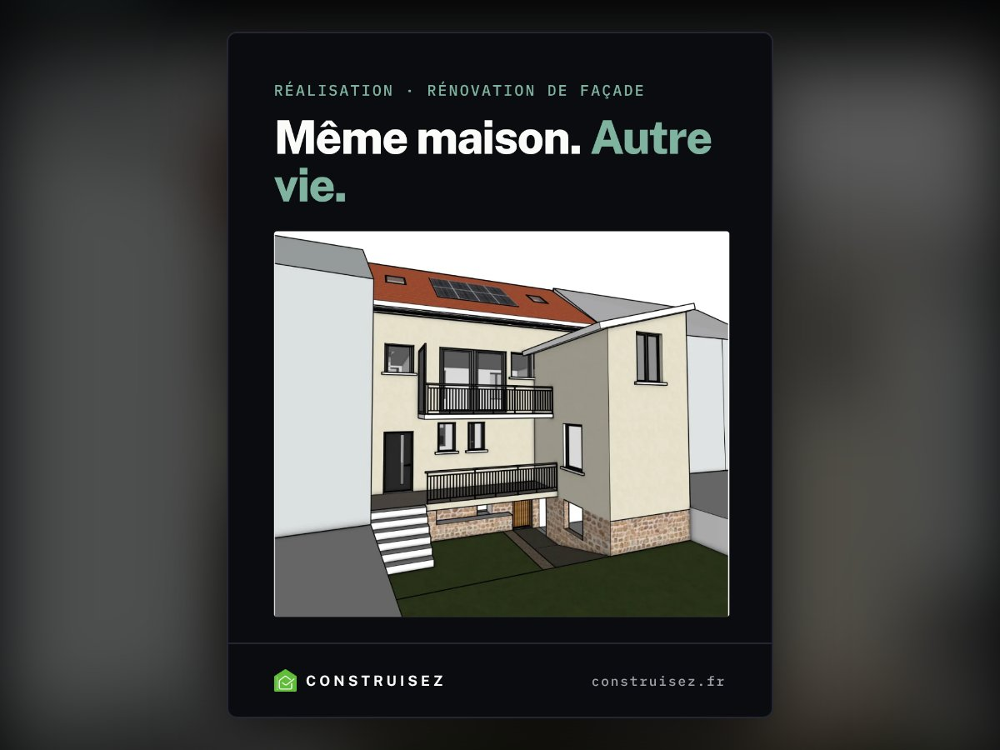<figcaption>Appui long (téléphone) ou clic droit : « Enregistrer l'image »</figcaption></figure>
    <div class="txt">
      <div class="label-row"><span class="lab">Texte de l'actualité</span><button type="button" class="copy" data-target="t-2026-11-19">Copier le texte</button></div>
      <pre id="t-2026-11-19" class="text">Même maison, autre vie : la rénovation d&#x27;une façade arrière.

Baies agrandies, deux balcons côté jardin, annexe enduite avec une nouvelle toiture, panneaux solaires et fenêtres de toit, soubassement en meulière conservé.

Bon à savoir : même côté jardin, tout ce qui modifie l&#x27;aspect extérieur se déclare. Nouvelles ouvertures, balcons, panneaux solaires, changement d&#x27;enduit : il faut au minimum une déclaration préalable.

Un projet de façade ? Construisez prépare et dépose votre dossier. Devis sous 24 h.</pre>
      <div class="label-row"><span class="lab">Bouton : En savoir plus</span><button type="button" class="copy" data-target="u-2026-11-19">Copier le lien</button></div>
      <code id="u-2026-11-19" class="url">https://www.construisez.fr/?utm_source=google&utm_medium=gbp&utm_campaign=posts</code>
    </div>
  </div>
</article>
<article class="post" id="p2026-11-20" data-id="2026-11-20">
  <header class="post-head">
    <div class="when"><span class="n">12</span><span class="day">vendredi 20 novembre</span><span class="time">dès 19:45</span></div>
    <label class="done"><input type="checkbox" id="done-2026-11-20"> Publié</label>
  </header>
  <h2>Transformer son garage en pièce de vie</h2>
  <p class="city">📍 Saint-Maur-des-Fossés (94)</p>
  <div class="body">
    <figure>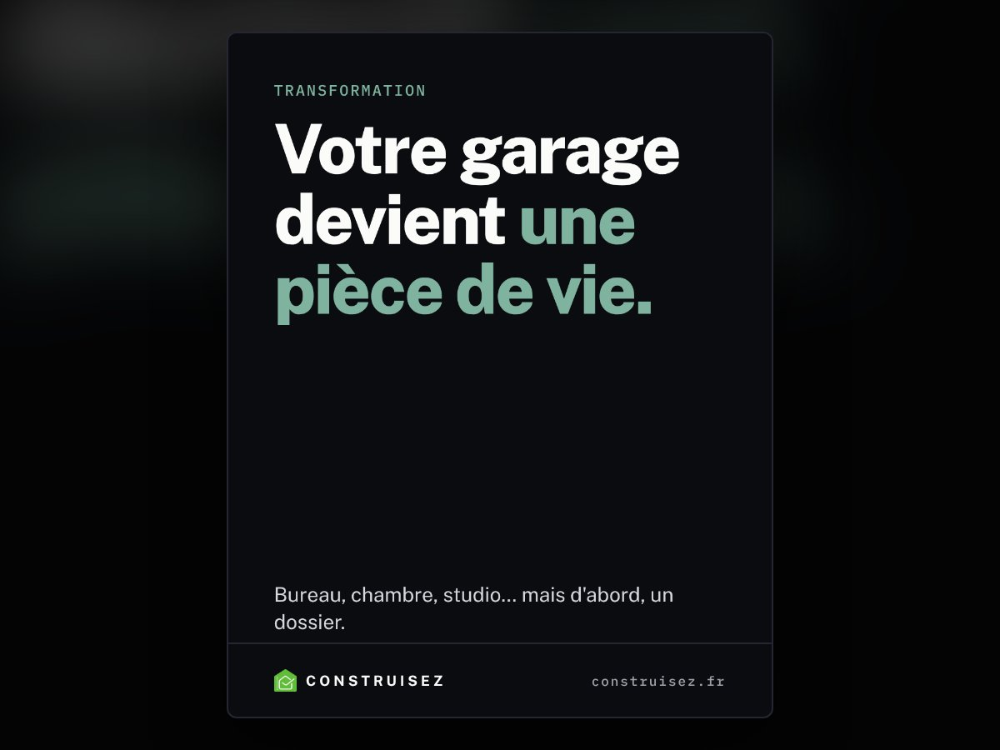<figcaption>Appui long (téléphone) ou clic droit : « Enregistrer l'image »</figcaption></figure>
    <div class="txt">
      <div class="label-row"><span class="lab">Texte de l'actualité</span><button type="button" class="copy" data-target="t-2026-11-20">Copier le texte</button></div>
      <pre id="t-2026-11-20" class="text">Transformer son garage en pièce de vie se déclare. La surface de plancher augmente, puisqu&#x27;un garage n&#x27;en compte pas. La façade change quand la porte de garage devient fenêtre. Et le PLU peut exiger de garder une place de stationnement sur le terrain.

Selon la surface créée : déclaration préalable ou permis de construire, avec un architecte obligatoire au-delà de 150 m² au total.

Construisez prépare et dépose vos autorisations d&#x27;urbanisme partout en Île-de-France. Devis sous 24 h.</pre>
      <div class="label-row"><span class="lab">Bouton : En savoir plus</span><button type="button" class="copy" data-target="u-2026-11-20">Copier le lien</button></div>
      <code id="u-2026-11-20" class="url">https://www.construisez.fr/?utm_source=google&utm_medium=gbp&utm_campaign=posts</code>
    </div>
  </div>
</article>
<article class="post" id="p2026-11-21" data-id="2026-11-21">
  <header class="post-head">
    <div class="when"><span class="n">13</span><span class="day">samedi 21 novembre</span><span class="time">dès 19:45</span></div>
    <label class="done"><input type="checkbox" id="done-2026-11-21"> Publié</label>
  </header>
  <h2>Ravalement de façade</h2>
  <p class="city">📍 Saint-Maur-des-Fossés (94)</p>
  <div class="body">
    <figure><figcaption>Appui long (téléphone) ou clic droit : « Enregistrer l'image »</figcaption></figure>
    <div class="txt">
      <div class="label-row"><span class="lab">Texte de l'actualité</span><button type="button" class="copy" data-target="t-2026-11-21">Copier le texte</button></div>
      <pre id="t-2026-11-21" class="text">Ravaler sa façade : faut-il une déclaration ? À l&#x27;identique, c&#x27;est souvent sans formalité. Mais dans une commune qui l&#x27;impose ou en secteur protégé, une déclaration préalable est obligatoire, même à l&#x27;identique. Et une nouvelle couleur ou un nouveau matériau change l&#x27;aspect : déclaration préalable.

Beaucoup de communes d&#x27;Île-de-France ont un nuancier : vérifiez les teintes autorisées avant de choisir.

Construisez prépare et dépose vos autorisations d&#x27;urbanisme partout en Île-de-France. Devis sous 24 h.</pre>
      <div class="label-row"><span class="lab">Bouton : En savoir plus</span><button type="button" class="copy" data-target="u-2026-11-21">Copier le lien</button></div>
      <code id="u-2026-11-21" class="url">https://www.construisez.fr/?utm_source=google&utm_medium=gbp&utm_campaign=posts</code>
    </div>
  </div>
</article>
<article class="post" id="p2026-11-22" data-id="2026-11-22">
  <header class="post-head">
    <div class="when"><span class="n">14</span><span class="day">dimanche 22 novembre</span><span class="time">dès 19:45</span></div>
    <label class="done"><input type="checkbox" id="done-2026-11-22"> Publié</label>
  </header>
  <h2>Notre méthode en 4 étapes</h2>
  <p class="city">📍 Saint-Maur-des-Fossés (94)</p>
  <div class="body">
    <figure>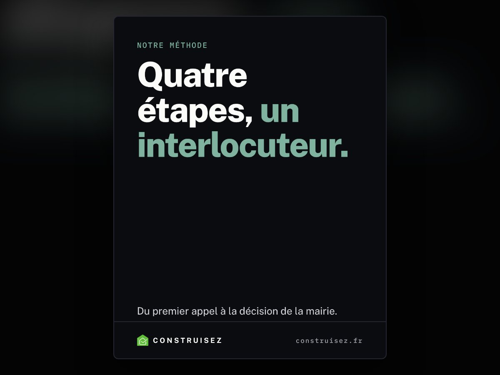<figcaption>Appui long (téléphone) ou clic droit : « Enregistrer l'image »</figcaption></figure>
    <div class="txt">
      <div class="label-row"><span class="lab">Texte de l'actualité</span><button type="button" class="copy" data-target="t-2026-11-22">Copier le texte</button></div>
      <pre id="t-2026-11-22" class="text">Quatre étapes, un interlocuteur. On vérifie avant de dessiner, avec la lecture du PLU et la faisabilité. On fait le relevé sur place. On réalise les plans et l&#x27;insertion 3D pour que vous voyiez le projet avant le dépôt. Puis on dépose et on suit l&#x27;instruction jusqu&#x27;à la décision.

Prix forfaitaire connu avant engagement, plus de 300 projets accompagnés en Île-de-France depuis 2018.

Construisez prépare et dépose vos autorisations d&#x27;urbanisme partout en Île-de-France. Devis sous 24 h.</pre>
      <div class="label-row"><span class="lab">Bouton : En savoir plus</span><button type="button" class="copy" data-target="u-2026-11-22">Copier le lien</button></div>
      <code id="u-2026-11-22" class="url">https://www.construisez.fr/?utm_source=google&utm_medium=gbp&utm_campaign=posts</code>
    </div>
  </div>
</article>
<article class="post" id="p2026-11-24" data-id="2026-11-24">
  <header class="post-head">
    <div class="when"><span class="n">15</span><span class="day">mardi 24 novembre</span><span class="time">dès 19:45</span></div>
    <label class="done"><input type="checkbox" id="done-2026-11-24"> Publié</label>
  </header>
  <h2>Erreur n°1 : le dossier incomplet</h2>
  <p class="city">📍 Saint-Maur-des-Fossés (94)</p>
  <div class="body">
    <figure><figcaption>Appui long (téléphone) ou clic droit : « Enregistrer l'image »</figcaption></figure>
    <div class="txt">
      <div class="label-row"><span class="lab">Texte de l'actualité</span><button type="button" class="copy" data-target="t-2026-11-24">Copier le texte</button></div>
      <pre id="t-2026-11-24" class="text">Votre permis n&#x27;avance pas ? Il est peut-être incomplet.

Tant qu&#x27;il manque une pièce, le délai d&#x27;instruction ne court pas, et il repart à la réception des pièces complémentaires. Les oublis les plus fréquents : un plan de masse sans cotes ni distances aux limites, une coupe sans le terrain naturel, une insertion graphique peu réaliste, des photos qui ne montrent pas l&#x27;environnement proche et lointain.

Construisez dépose des dossiers complets du premier coup, partout en Île-de-France. Devis sous 24 h.</pre>
      <div class="label-row"><span class="lab">Bouton : En savoir plus</span><button type="button" class="copy" data-target="u-2026-11-24">Copier le lien</button></div>
      <code id="u-2026-11-24" class="url">https://www.construisez.fr/?utm_source=google&utm_medium=gbp&utm_campaign=posts</code>
    </div>
  </div>
</article>
<article class="post" id="p2026-11-26" data-id="2026-11-26">
  <header class="post-head">
    <div class="when"><span class="n">16</span><span class="day">jeudi 26 novembre</span><span class="time">dès 19:45</span></div>
    <label class="done"><input type="checkbox" id="done-2026-11-26"> Publié</label>
  </header>
  <h2>création d&#x27;une cave sous une maison existante</h2>
  <p class="city">📍 Saint-Maur-des-Fossés (94)</p>
  <div class="body">
    <figure>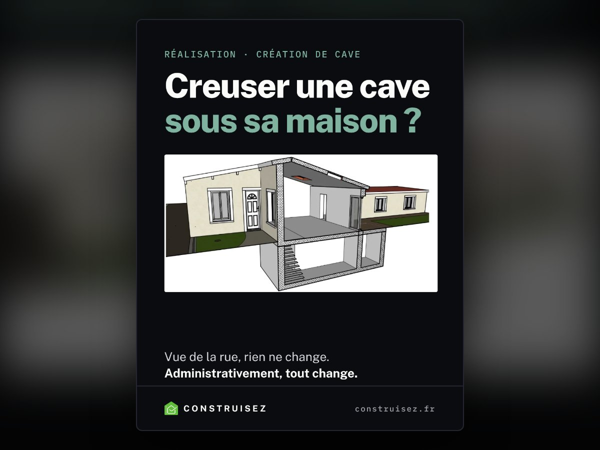<figcaption>Appui long (téléphone) ou clic droit : « Enregistrer l'image »</figcaption></figure>
    <div class="txt">
      <div class="label-row"><span class="lab">Texte de l'actualité</span><button type="button" class="copy" data-target="t-2026-11-26">Copier le texte</button></div>
      <pre id="t-2026-11-26" class="text">Gagner de la surface sans toucher au jardin ni au toit : nous avons créé une cave sous une maison existante.

Cave de 2,18 m sous plafond, sous la pièce de vie, avec escalier intérieur. À savoir avant de creuser : au-delà de 1,80 m sous plafond, la cave compte dans la surface de plancher ; dès 5 m² créés sur une maison existante, il faut au minimum une déclaration préalable ; et creuser sous des murs existants demande une étude de structure.

Un projet de cave ou de sous-sol ? Devis sous 24 h.</pre>
      <div class="label-row"><span class="lab">Bouton : En savoir plus</span><button type="button" class="copy" data-target="u-2026-11-26">Copier le lien</button></div>
      <code id="u-2026-11-26" class="url">https://www.construisez.fr/?utm_source=google&utm_medium=gbp&utm_campaign=posts</code>
    </div>
  </div>
</article>
<article class="post" id="p2026-12-01" data-id="2026-12-01">
  <header class="post-head">
    <div class="when"><span class="n">17</span><span class="day">mardi 1 décembre</span><span class="time">dès 19:45</span></div>
    <label class="done"><input type="checkbox" id="done-2026-12-01"> Publié</label>
  </header>
  <h2>Quiz abri de jardin</h2>
  <p class="city">📍 Saint-Maur-des-Fossés (94)</p>
  <div class="body">
    <figure>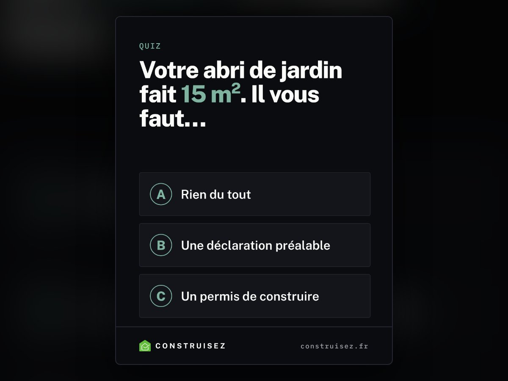<figcaption>Appui long (téléphone) ou clic droit : « Enregistrer l'image »</figcaption></figure>
    <div class="txt">
      <div class="label-row"><span class="lab">Texte de l'actualité</span><button type="button" class="copy" data-target="t-2026-12-01">Copier le texte</button></div>
      <pre id="t-2026-12-01" class="text">Quiz : votre abri de jardin fait 15 m². Quelle autorisation vous faut-il ?

Réponse : une déclaration préalable. Moins de 5 m² : aucune formalité (hors secteur protégé). De 5 à 20 m² : déclaration préalable. Plus de 20 m² : permis de construire. Au-delà de 5 m², l&#x27;abri entre aussi dans le calcul de la taxe d&#x27;aménagement.

Construisez gère vos déclarations préalables et permis de construire en Île-de-France. Devis sous 24 h.</pre>
      <div class="label-row"><span class="lab">Bouton : En savoir plus</span><button type="button" class="copy" data-target="u-2026-12-01">Copier le lien</button></div>
      <code id="u-2026-12-01" class="url">https://www.construisez.fr/?utm_source=google&utm_medium=gbp&utm_campaign=posts</code>
    </div>
  </div>
</article>
<article class="post" id="p2026-12-03" data-id="2026-12-03">
  <header class="post-head">
    <div class="when"><span class="n">18</span><span class="day">jeudi 3 décembre</span><span class="time">dès 19:45</span></div>
    <label class="done"><input type="checkbox" id="done-2026-12-03"> Publié</label>
  </header>
  <h2>devanture du restaurant Riz Djondjon</h2>
  <p class="city">📍 Saint-Maur-des-Fossés (94)</p>
  <div class="body">
    <figure><figcaption>Appui long (téléphone) ou clic droit : « Enregistrer l'image »</figcaption></figure>
    <div class="txt">
      <div class="label-row"><span class="lab">Texte de l'actualité</span><button type="button" class="copy" data-target="t-2026-12-03">Copier le texte</button></div>
      <pre id="t-2026-12-03" class="text">Une nouvelle devanture pour le restaurant Riz Djondjon.

Habillage bois vertical, enseigne noire et dorée lisible de loin, entrées de l&#x27;immeuble et du restaurant conservées. Modifier une devanture se déclare : la façade passe par une déclaration préalable, et l&#x27;enseigne demande souvent sa propre autorisation selon la commune.

Notre travail : relevé sur place, plans de façade existant et projet cotés, insertion dans la rue, dépôt et suivi. Vous ouvrez ou rénovez un commerce ? Devis sous 24 h.</pre>
      <div class="label-row"><span class="lab">Bouton : En savoir plus</span><button type="button" class="copy" data-target="u-2026-12-03">Copier le lien</button></div>
      <code id="u-2026-12-03" class="url">https://www.construisez.fr/?utm_source=google&utm_medium=gbp&utm_campaign=posts</code>
    </div>
  </div>
</article>
<article class="post" id="p2026-12-08" data-id="2026-12-08">
  <header class="post-head">
    <div class="when"><span class="n">19</span><span class="day">mardi 8 décembre</span><span class="time">dès 19:45</span></div>
    <label class="done"><input type="checkbox" id="done-2026-12-08"> Publié</label>
  </header>
  <h2>Le voisin et le recours</h2>
  <p class="city">📍 Saint-Maur-des-Fossés (94)</p>
  <div class="body">
    <figure>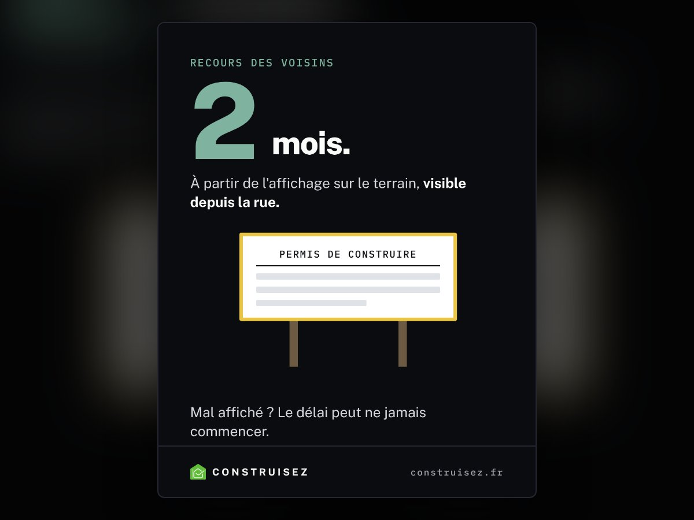<figcaption>Appui long (téléphone) ou clic droit : « Enregistrer l'image »</figcaption></figure>
    <div class="txt">
      <div class="label-row"><span class="lab">Texte de l'actualité</span><button type="button" class="copy" data-target="t-2026-12-08">Copier le texte</button></div>
      <pre id="t-2026-12-08" class="text">« Mon voisin a fait un recours contre mon permis. » Ce qu&#x27;il faut savoir.

Le délai de recours des tiers est de 2 mois, à partir de l&#x27;affichage du permis sur le terrain, visible depuis la rue. Mal affiché, le délai peut ne jamais commencer : faites constater l&#x27;affichage. Présenter le projet aux voisins avant le dépôt désamorce la plupart des conflits, et un projet bien conçu laisse peu de prise à un recours.

Construisez conçoit des projets solides face au PLU. Devis sous 24 h.</pre>
      <div class="label-row"><span class="lab">Bouton : En savoir plus</span><button type="button" class="copy" data-target="u-2026-12-08">Copier le lien</button></div>
      <code id="u-2026-12-08" class="url">https://www.construisez.fr/?utm_source=google&utm_medium=gbp&utm_campaign=posts</code>
    </div>
  </div>
</article>
<article class="post" id="p2026-12-10" data-id="2026-12-10">
  <header class="post-head">
    <div class="when"><span class="n">20</span><span class="day">jeudi 10 décembre</span><span class="time">dès 19:45</span></div>
    <label class="done"><input type="checkbox" id="done-2026-12-10"> Publié</label>
  </header>
  <h2>L&#x27;insertion graphique, la pièce qui fait accepter un projet</h2>
  <p class="city">📍 Saint-Maur-des-Fossés (94)</p>
  <div class="body">
    <figure>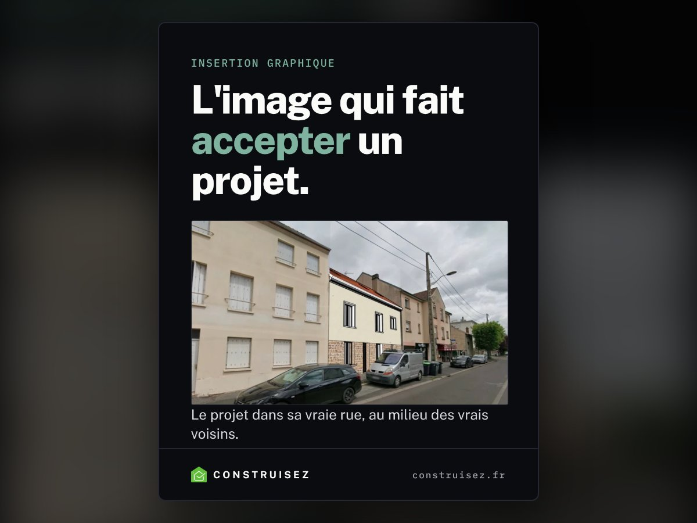<figcaption>Appui long (téléphone) ou clic droit : « Enregistrer l'image »</figcaption></figure>
    <div class="txt">
      <div class="label-row"><span class="lab">Texte de l'actualité</span><button type="button" class="copy" data-target="t-2026-12-10">Copier le texte</button></div>
      <pre id="t-2026-12-10" class="text">La pièce qui fait souvent accepter un permis : l&#x27;insertion graphique.

C&#x27;est la pièce PCMI6 du permis de construire (DP6 en déclaration préalable). Elle montre le projet dans sa vraie rue : une vraie photo prise depuis l&#x27;espace public, le projet à la bonne échelle avec ses matériaux, vu comme un passant le verra. Une insertion soignée répond à la question de l&#x27;instructeur : est-ce que ça s&#x27;intègre ?

Construisez réalise des insertions 3D réalistes. Devis sous 24 h.</pre>
      <div class="label-row"><span class="lab">Bouton : En savoir plus</span><button type="button" class="copy" data-target="u-2026-12-10">Copier le lien</button></div>
      <code id="u-2026-12-10" class="url">https://www.construisez.fr/?utm_source=google&utm_medium=gbp&utm_campaign=posts</code>
    </div>
  </div>
</article>
<article class="post" id="p2026-12-15" data-id="2026-12-15">
  <header class="post-head">
    <div class="when"><span class="n">21</span><span class="day">mardi 15 décembre</span><span class="time">dès 19:45</span></div>
    <label class="done"><input type="checkbox" id="done-2026-12-15"> Publié</label>
  </header>
  <h2>Checklist des pièces du permis maison</h2>
  <p class="city">📍 Saint-Maur-des-Fossés (94)</p>
  <div class="body">
    <figure>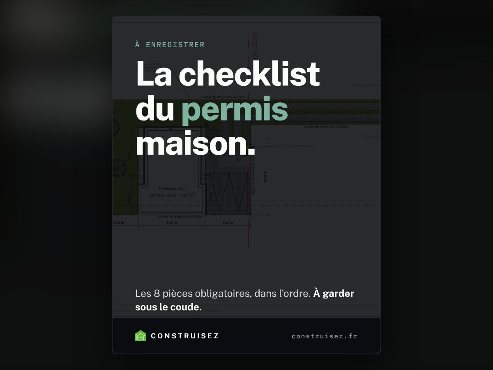<figcaption>Appui long (téléphone) ou clic droit : « Enregistrer l'image »</figcaption></figure>
    <div class="txt">
      <div class="label-row"><span class="lab">Texte de l'actualité</span><button type="button" class="copy" data-target="t-2026-12-15">Copier le texte</button></div>
      <pre id="t-2026-12-15" class="text">La checklist du permis de construire d&#x27;une maison individuelle.

PCMI1 plan de situation, PCMI2 plan de masse coté, PCMI3 plan en coupe, PCMI4 notice descriptive, PCMI5 façades et toitures, PCMI6 insertion graphique, PCMI7 et PCMI8 photos de l&#x27;environnement proche et lointain. Selon le projet : attestation RE2020, étude de sol en zone argileuse, pièces en secteur protégé.

Vous préférez qu&#x27;on s&#x27;en occupe ? Construisez monte votre dossier de A à Z. Devis sous 24 h.</pre>
      <div class="label-row"><span class="lab">Bouton : En savoir plus</span><button type="button" class="copy" data-target="u-2026-12-15">Copier le lien</button></div>
      <code id="u-2026-12-15" class="url">https://www.construisez.fr/?utm_source=google&utm_medium=gbp&utm_campaign=posts</code>
    </div>
  </div>
</article>
<article class="post" id="p2026-12-17" data-id="2026-12-17">
  <header class="post-head">
    <div class="when"><span class="n">22</span><span class="day">jeudi 17 décembre</span><span class="time">dès 19:45</span></div>
    <label class="done"><input type="checkbox" id="done-2026-12-17"> Publié</label>
  </header>
  <h2>Coulisses : le permis accordé d’une maison neuve à Lisses (91)</h2>
  <p class="city">📍 Lisses (91)</p>
  <div class="body">
    <figure>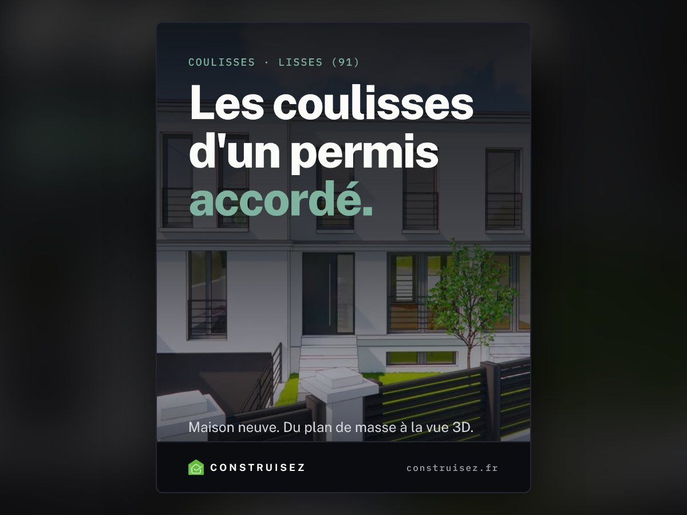<figcaption>Appui long (téléphone) ou clic droit : « Enregistrer l'image »</figcaption></figure>
    <div class="txt">
      <div class="label-row"><span class="lab">Texte de l'actualité</span><button type="button" class="copy" data-target="t-2026-12-17">Copier le texte</button></div>
      <pre id="t-2026-12-17" class="text">Les coulisses d&#x27;un permis accordé : maison neuve à Lisses (91).

D&#x27;abord le plan de masse coté : emprise, distances aux limites, accès, réseaux, chaque cote conforme au PLU. Puis l&#x27;insertion 3D : le client voit sa maison avant le dépôt, la mairie comprend comment elle s&#x27;intègre dans la rue. Résultat : permis accordé.

Notre méthode : on vérifie avant de dessiner, on dépose un dossier propre, on suit l&#x27;instruction. Un terrain ou un projet de maison ? Devis sous 24 h.</pre>
      <div class="label-row"><span class="lab">Bouton : En savoir plus</span><button type="button" class="copy" data-target="u-2026-12-17">Copier le lien</button></div>
      <code id="u-2026-12-17" class="url">https://www.construisez.fr/?utm_source=google&utm_medium=gbp&utm_campaign=posts</code>
    </div>
  </div>
</article>
<article class="post" id="p2026-12-22" data-id="2026-12-22">
  <header class="post-head">
    <div class="when"><span class="n">23</span><span class="day">mardi 22 décembre</span><span class="time">dès 19:45</span></div>
    <label class="done"><input type="checkbox" id="done-2026-12-22"> Publié</label>
  </header>
  <h2>Validité du permis</h2>
  <p class="city">📍 Saint-Maur-des-Fossés (94)</p>
  <div class="body">
    <figure><figcaption>Appui long (téléphone) ou clic droit : « Enregistrer l'image »</figcaption></figure>
    <div class="txt">
      <div class="label-row"><span class="lab">Texte de l'actualité</span><button type="button" class="copy" data-target="t-2026-12-22">Copier le texte</button></div>
      <pre id="t-2026-12-22" class="text">Votre permis de construire a une date d&#x27;expiration.

Il est valable 3 ans. Si les travaux n&#x27;ont pas commencé dans ce délai, ou s&#x27;ils sont interrompus plus d&#x27;un an, il devient caduc. Vous pouvez demander une prorogation d&#x27;un an, deux fois, à condition de la demander avant l&#x27;expiration et que les règles d&#x27;urbanisme n&#x27;aient pas changé. Besoin d&#x27;ajuster le projet avant de démarrer ? Un permis modificatif est souvent possible.

Construisez vous accompagne. Devis sous 24 h.</pre>
      <div class="label-row"><span class="lab">Bouton : En savoir plus</span><button type="button" class="copy" data-target="u-2026-12-22">Copier le lien</button></div>
      <code id="u-2026-12-22" class="url">https://www.construisez.fr/?utm_source=google&utm_medium=gbp&utm_campaign=posts</code>
    </div>
  </div>
</article>
</main>

<script>
(function () {
  const store = {
    get(k) { try { return localStorage.getItem(k); } catch (e) { return null; } },
    set(k, v) { try { v === null ? localStorage.removeItem(k) : localStorage.setItem(k, v); } catch (e) {} }
  };
  const posts = [...document.querySelectorAll('.post')];
  function refresh() {
    const done = posts.filter(p => p.classList.contains('is-done')).length;
    document.getElementById('progress').textContent = done + ' / ' + posts.length + ' posts publiés';
  }
  posts.forEach(p => {
    const box = p.querySelector('.done input');
    box.checked = store.get('done-' + p.dataset.id) === '1';
    p.classList.toggle('is-done', box.checked);
    box.addEventListener('change', () => {
      p.classList.toggle('is-done', box.checked);
      store.set('done-' + p.dataset.id, box.checked ? '1' : null);
      refresh();
    });
  });
  refresh();
  function selectText(el) {
    const r = document.createRange(); r.selectNodeContents(el);
    const s = window.getSelection(); s.removeAllRanges(); s.addRange(r);
  }
  document.querySelectorAll('.copy').forEach(btn => {
    const label = btn.textContent;
    btn.addEventListener('click', () => {
      const el = document.getElementById(btn.dataset.target);
      const done = (msg) => { btn.textContent = msg; btn.classList.add('ok'); setTimeout(() => { btn.textContent = label; btn.classList.remove('ok'); }, 1800); };
      const fallback = () => { selectText(el); done('Sélectionné : copiez'); };
      if (navigator.clipboard && navigator.clipboard.writeText) {
        navigator.clipboard.writeText(el.textContent).then(() => done('Copié'), fallback);
      } else fallback();
    });
  });
  const target = location.hash && document.querySelector(location.hash);
  if (target) target.scrollIntoView();
})();
</script>
